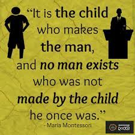

What makes a good parent?
A good parent is someone who strives to make decisions in the best interest of the child. What makes a great parent isn’t only defined by the parent’s action, but also their intention.
A good parent doesn’t have to be perfect. No one is perfect. No child is perfect either … keeping this in mind is important when we set our expectations.
Successful parenting is not about achieving perfection. But it doesn’t mean that we shouldn’t work towards that goal. Set high standards for ourselves first and then our children second. We serve as role models for them.
Here are 10 tips on learning good parenting skills and avoiding bad parenting. Many of them are not quick nor easy. And probably no one can do all of them all of the time. But if you can keep working on the tips in this parenting guide, even though you may only do part of these some of the time, you will still be moving in the right direction.
Ten Good Parenting Tips
#1 BE A GOOD ROLE MODEL
Walk the talk. Don’t just tell your child what you want them to do. Show them.
Human is a special species in part because we can learn by imitation1. We are programmed to copy other’s actions to understand them and to incorporate them into our own. Children, in particular, watch everything their parents do very carefully.
So, be the person you want your child to be — respect your child, show them positive behavior and attitude, have empathy towards your child’s emotion — and your child will follow suit.
#2: LOVE THEM AND SHOW THEM THROUGH ACTION
There is no such thing as loving your child too much. Loving them cannot spoil them. Only what you choose to do (or give) in the name of love can — things like material-indulgence, leniency, low expectation, and over-protection. When these things are given in place of real love, that’s when you’ll have a spoiled child.
Loving your child can be as simple as giving them hugs, spending time with them and listening to their issues seriously every day.
Showing these acts of love can trigger the release of feel-good hormones such as oxytocin. These neurochemicals can bring us a deep sense of calm, emotional warmth and contentment, from these the child will develop resilience and not to mention a closer relationship with you.
#3: PRACTICE KIND AND FIRM POSITIVE PARENTING
Babies are born with around 100 billion brain cells (neurons) with relatively little connections. These connections create our thoughts, drive our actions, shape our personalities and basically determine who we are. They are created, strengthened and “sculpted” through experiences across our lives.
Give your child positive experiences. They will have the ability to experience positive experiences themselves and offer them to others.
Give your child negative experiences. They won’t have the kind of development necessary for them to thrive.
Sing that silly song. Have a tickle marathon. Go to the park. Laugh with your child. Ride through an emotional tantrum. Solve a problem together with a positive attitude.
Not only do these positive experiences create good connections in your child’s brain, but they also form the memories of you that your child carries for life.
When it comes to discipline, it seems hard to remain positive. But it is possible to practice Positive Discipline and avoid punitive measures.
Being a good parent means you need to teach your child the moral in what is right and what is wrong. Setting limits and being consistent are the keys to good discipline. Be kind and firm when enforcing those rules. Focus on the reason behind the child’s behavior. And make it an opportunity to learn for the future, rather than to punish for the past.
#4: BE A SAFE HAVEN FOR YOUR CHILD
Let your child know that you’ll always be there for them by being responsive to the child’s signals and sensitive to their needs. Support and accept your child as an individual. Be a warm, safe haven for your child to explore from.
Children raised by parents who are consistently responsive tend to have better emotional regulation development, social skills development, and mental health outcomes.
#5: TALK WITH YOUR CHILD AND HELP THEIR BRAINS INTEGRATE
Most of us already know the importance of communication. Talk to your child and also listen to them
carefully.
By keeping an open line of communication, you’ll have a better relationship with your child and your child
will come to you when there’s a problem.
But there’s another reason for communication — you help your child integrate different parts of his/her
brain.
Integration is similar to our body in which different organs need to coordinate and work together to
maintain a healthy body. When different parts of the brain are integrated, they can function harmoniously as
a whole, which means fewer tantrums, more cooperative behavior, more empathy and better mental
well-being.
To do that, talk through troubling experiences. Ask your child to describe what happened and how he/she felt
to develop attuned communication. You don’t have to provide solutions. You don’t need to have all the
answers to be a good parent. Just listening to them talk and asking clarifying questions will help them make
sense of their experiences and integrate memories.
#6: REFLECT ON YOUR OWN CHILDHOOD
Many of us want to parent differently from our parents. Even those who had good upbringing and a happy childhood may want to change some aspects of how they were brought up.
But very often, when we open our mouths, we speak just like our parents did.
Reflecting on our own childhood is a step towards understanding why we parent the way we do. Make note of things you’d like to change and think of how you’d do it differently in a real scenario. Try to be mindful and change your behavior the next time those issues come up.
Don’t give up if you don’t succeed at first. It takes practice, lots of practice to consciously change one’s child upbringing methods.
#7: PAY ATTENTION TO YOUR OWN WELL-BEING
Parents need relief too. Pay attention to your own well-being.
Often times, things such as your own health or the health of your marriage are kept on the back burner when a child is born. If you don’t pay attention to them, they will become bigger problems down the road8. Take time to strengthen your relationship with your spouse.
Stressed out parents are more prone to fighting. Don’t be afraid to ask for parenting help. Having some “me time” for self-care is important to rejuvenate the mind.
How parents may take care of themselves physically and mentally will make a big difference in their parenting and family life. If these two areas fail, your child will suffer, too.
#8: DO NOT SPANK, NO MATTER WHAT
No doubt, to some parents, spanking can bring about short-term compliance which sometimes is a much-needed relief for the parents.
However, this method doesn’t teach the child right from wrong. It only teaches the child to fear external consequences. The child is then motivated to avoid getting caught instead.
Spanking your child is modeling to your child that he/she can resolve issues by violence9. Children who are spanked, smacked or hit are more prone to fighting with other children. They are more likely to become bullies and to use verbal/physical aggression to solve disputes. Later in life, they are also more likely to result in delinquency and antisocial behavior, worse parent-child relationships, mental health issues, and domestic violence victims or abusers10.
There are a variety of better alternatives to discipline that have been proven to be more effective11, such as Positive Discipline (Tip #3 above) and positive reinforcement.
#9 KEEP THINGS IN PERSPECTIVE AND REMEMBER YOUR PARENTING GOAL
What is your goal of raising a child?
If you’re like most parents, you want your child to do well in school, be productive, be responsible and independent, respectful, enjoy meaningful relationships with you and others, be caring and compassionate, and have a happy, healthy and fulfilling life.
But how much time do you spend on working towards those goals?
If you’re like most parents, you probably spend most of the time just trying to get through the day. As authors, Siegel and Bryson, point out in their book, The Whole-Brain Child, instead of helping your child thrive, you spend most of time just trying to survive!
To not let the survival mode dominate your life, next time you feel angry or frustrated, step back. Think about what anger and frustration will do for you or your child. Instead, find ways to turn every negative experience into a learning opportunity for him/her. Even epic tantrums can be turned into invaluable brain-sculpting moments.
Doing these will not only help you keep a healthy perspective, but you are also working on one of your primary goals in parenting — building a good relationship with your child.
#10: TAKE A SHORTCUT BY UTILIZING FINDINGS IN LATEST PSYCHOLOGY AND NEUROSCIENCE RESEARCH
By shortcuts, I don’t mean shortchanging your child. What I mean is to take advantage of what is already known by scientists.
Parenting is one of the most researched fields in psychology. Many parenting techniques, practices, or traditions have been scientifically researched, verified, refined or refuted.
For best advice for raising a child and information that are backed by science, here is one of my favorite science-based parenting books, The Science of Parenting.
Using scientific knowledge is of course not a one-size-fits-all strategy. Every child is different. Even within the best parenting style, there can be many different effective parenting practices you can choose according to your child’s temperament.
For example, besides spanking, there are many better alternatives, e.g. redirection, reasoning, removing privileges, time-in, etc. You can choose the non-punitive discipline method that works best for your child.
Of course, you can also choose to use “traditional” or “old school” parenting styles (e.g. spanking) and may still get the “same” outcome.
According to the Diathesis-Stress Model, people who have vulnerabilities to suffer from a psychological disorder are more likely to develop one when they experience stress. The diathesis, i.e. vulnerabilities, can be biological or environmental.
Perhaps the child may be lucky and don’t have such vulnerabilities. They may be resilient and prevail no matter how tough parents treat their child.
But they may be not.
So the importance of parenting cannot be underestimated. Why risk the damages some of the sub-par practices may create while there’re well researched, better ones?
Taking these “shortcuts” may require more work on your part in the short-term, but can save you lots of time and agony in the long run.
Final Thoughts On Parenting
The good thing is, although parenting is hard, it is also very rewarding. The bad part is the rewards usually come much later than the hard work. But if we try our best now, we will eventually reap the rewards and have nothing to regret.